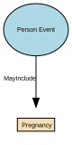

Pregnancy
Pregnancy is a time‑bound life event that records the fact that an individual is pregnant, including the start, expected milestones, and outcome of the pregnancy where relevant for operational, safeguarding, or service‑eligibility purposes. It captures non‑clinical, administrative facts only—not medical diagnoses, treatment notes, or clinical assessments.
Implements Concepts from Person Domain, Concept Model
| Concept | Description |
|---|---|
| Pregnancy | Pregnancy is a time‑bound life event that records the fact that an individual is pregnant, including the start, expected milestones, and outcome of the pregnancy where relevant for operational, safeguarding, or service‑eligibility purposes. It captures non‑clinical, administrative facts only—not medical diagnoses, treatment notes, or clinical assessments. |
